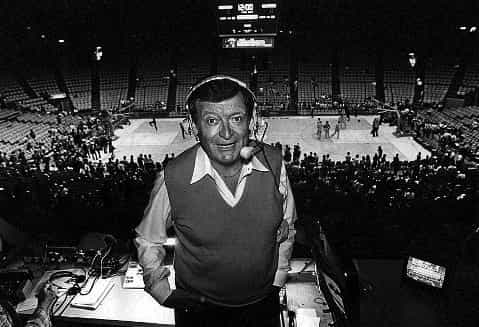

< < < Back
The Lakers Resort to Beta Supplication – Return Of Kings
Say what you will about the Los Angeles Lakers, there’s no denying that they’re one of the great American sports franchises, with a storied past and a long tradition of winning. Many of the greatest players in the history of professional basketball have donned the Laker purple and gold, and its 16 titles is only one short of their hated rivals—the Boston Celtics—for most in NBA history. Since the 1960s, the Lakers have been a perennial presence in the playoffs, with each succeeding “dynasty” adding its own set of trophies to the pile.
The franchise’s list of accomplishments, hall-of-fame rosters, and legendary coaches is too long to do justice to in a single post. Even their longtime announcer, the late, great Chick Hearn, is universally regarded as the greatest announcer in basketball—if not sports—history, coining the very lexicon of the sport, from “slam dunk” to “alley-oop” to “air ball.” He was so good at calling games, real-time, that it was often said there wasn’t much difference between watching the game on television and just listening to it on the radio.

Much of this success came during the era of Dr. Jerry Buss—a successful real-estate investor who bought the team in the 1970s. Buss was a fan’s owner. While day-to-day operations belonged to his General Manager (the iconic Jerry West for much of that time and, after 2000, West’s adept protégé Mitch Kupchak), Buss was known to be an active owner who got involved in major roster decisions. And he put his money where his high expectations were. The team not only drafted and refined young talent, it repeatedly lured high-profile free agents to Tinseltown with record-breaking contracts.
But, beyond paying out the requisite paychecks, the team never had to resort to elaborate stunts or begging to entice top-shelf talent. The winning tradition, the ready-to-win rosters, and the many lures of sunny Southern California were more than enough.
Things have changed. Up to the end of his life at the beginning of 2013, Jerry Buss had incrementally ceded control of the family business to his son, the decidedly less capable (and reportedly more mercurial) Jim Buss. During this era, the Lakers had reassembled an impressive team around Kobe Bryant and Pau Gasol, with whom they had won two more championships. Shaquille O’Neal had, famously, departed after a tumultuous relationship and power struggle with Bryant in 2004. (It’s also considered likely that O’Neal was traded for shouting “Pay me!” to Jerry Buss, who was sitting in the stands, during an exhibition game—in a crass reference to their on-going contract negotiations.)
Last season, the Lakers offered up a supremely lackluster performance—barely making the playoffs and being swept in the first round—despite the additions of superstars Dwight Howard and Steve Nash to their already talented squad.
Dwight Howard, who was traded to Los Angeles from the Orlando Magic (a trade he requested), was eligible for free agency after his season. The Lakers had surrendered a top-notch prospect for Howard, and knew the risks of only having Howard locked down for a year going in. After a disappointing year—one in which Howard was publicly taken to task by Kobe Bryant and Laker fans for his disappointing individual performance—he announced that would entertain free-agent offers from several other franchises. Howard’s multi-city tour started this week. Needless to say, the Lakers, who would stand to get nothing for him if he were to leave, are highly motivated to do whatever’s necessary to keep him. This is especially the case since last season was tainted by a series of injuries (including Howard’s) and a major coaching change—developments that prevented the team from performing to its full potential.
You’d think the team would have confined its overtures to Howard to the sorts of closed-door negotiations and personnel reconfigurations that have taken place behind the scenes for decades. Blue-chip players have options and, whatever your team’s merits may be, other teams have offerings as well–so some give-and-take is to be expected. But, instead of that time-honored tradition, the Jim Buss-Era Lakers have resorted to good old-fashioned supplication. In a (very public) public-relations blitz, which includes a series of self-abasing billboards around Los Angeles, the Lakers have decided to flatly beg Howard to remain in Los Angeles. Reminiscent of the 90s hit by proto-hipster Lisa Loeb by the same title, the billboards plainly implore Howard to “stay.”
What’s more, the Lakers have recruited other players in their supplication campaign. Kobe Bryant will reportedly attend the “pitch meeting” with Howard (the Lakers have been granted the privilege of presenting to Howard last), where some are speculating he will bring one of his championship rings for a tantalizing show-and-tell. Steve Nash—a shoo-in for the Hall of Fame—condescended himself, and his own career accomplishments, to tweet this:
I always tell guys that “life is game and game is life.” In other words, the basic principles of game apply not just to picking up girls, but to everything—from dealing with your boss in your shitty office job to running a billion-dollar basketball team. Begging a girl to stay, as all of us know, is a sure-fire way to make her do the exact opposite.
And, like a heart-broken chump standing at a girl’s doorstep with a wilting bouquet of flowers in the rain–while she’s inside fielding offers from other guys– the Lakers are likely to meet the same, predictable fate.
Read More: Super Bowl Commercials Aren’t Sexist


{kind=link}
{kind=link}
{kind=link}
{kind=link}
{kind=link}